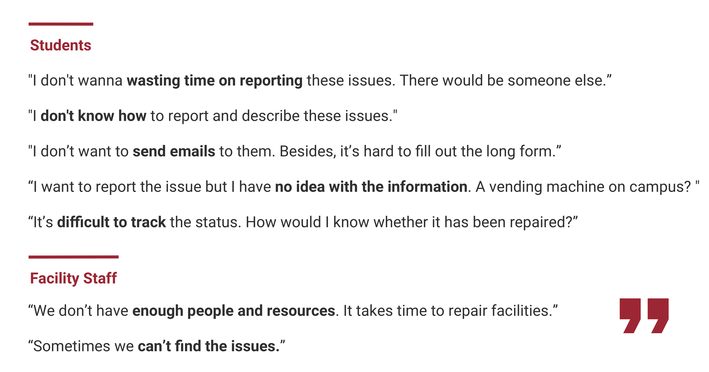
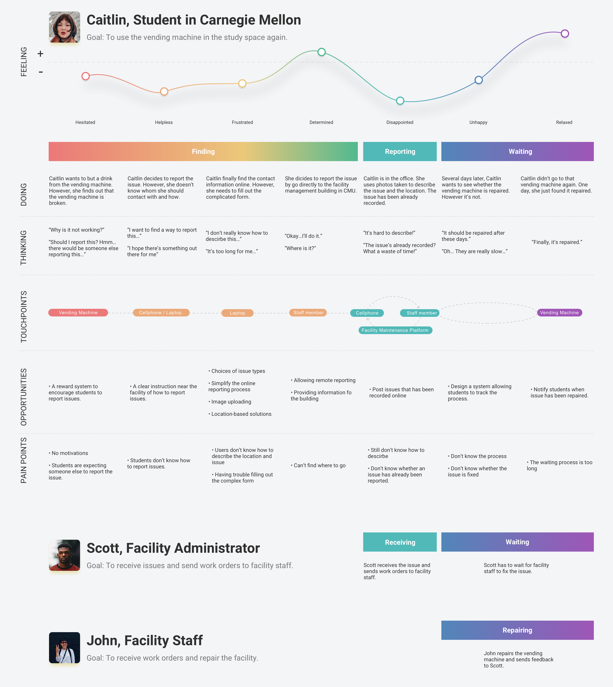
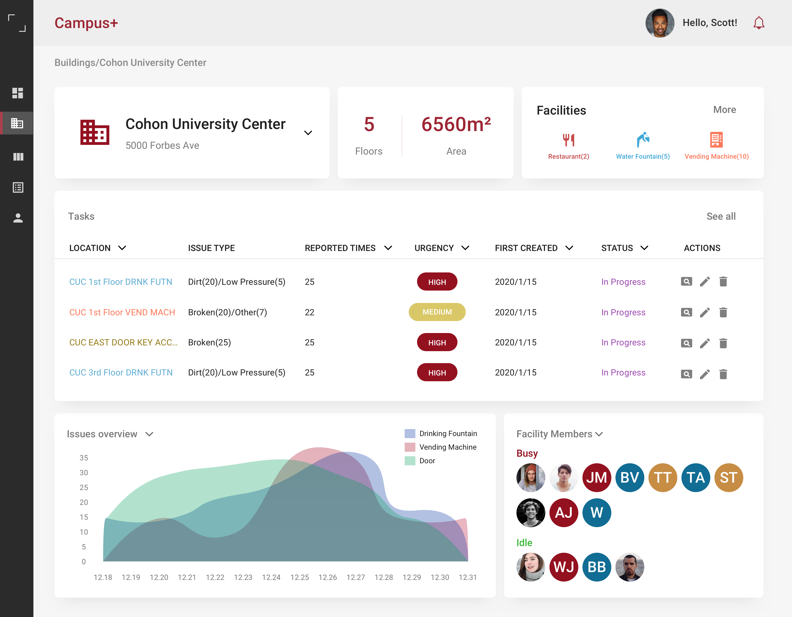

Information Architecture

Campus+ is a part of Google's design exercise 2020 and designed especially for CMU students.
Campus+ is an experience system designed to help students report and track public facility and building issues. It includes physical, mobile and desktop touch points. Basically, students can scan the QR code on the sticker near a facility (drinking fountain, vending machine, door, heater, etc.) to report and track an issue. The issue will be sent to facility administrators, allowing them to send work orders to facility members to fix the issue. This project takes CMU as an example, but can be also applied in other schools.
Students have several ways to report a building or facility issue - by filling out a complicated form, sending an email, making a phone call, or directly going to the facilities management building.
Online reporting forms and the Facility Management Building
In order to know more about existing problems, I went to the campus and interviewed 20 students and two facility staff members. Here are some interesting points in the interview.
On-campus Interviews
Caitlin is a student studying in Carnegie Mellon. One day, she found a vending machine broken in one of her study space and wanted to report this to the facility staff. The journey of the facility staff member and administrator is included as well.
Those problems are categorized based on the stages - before reporting, reporting, and repairing.
The order of solutions (features) is based on their priority.
A mobile app could help a lot in the reporting process. Students can simply open the app to report the issues. The reporting process will be simple - students only have to choose one of the issue types, and they can also upload optional descriptions and photos to help them describe the problem.
The reporting process should be location-based. After finding an issue, students can scan the QR code on a sticker near the facility/building. Therefore, they don't have to worry about describing the location and can easily go into the reporting process.
A reward system could motivate students to report an issue as soon as they find it. For example, they can get coupons from the school's bookstore after reporting an issue.
Students could easily track the repairing process and get notifications as soon as the facility/building has been repaired.
Such a system could also help facility administrators and staff members prioritize the issues - an issue might be serious if there're many students reporting it.
The app is designed to be simple. Students can scan the QR code near the facilities or buildings to report an issue. They can also track an issue and get notified. In the profile page, they can see their rewards and points.
Skibo Red, one in the CMU's campus palette, has been chosen as the core color of this App.
In order to help users better distinguish different facility/building types, several bright secondary colors were chosen to represent drinking fountains, vending machines, doors, walls, etc. These colors are used in small areas due to brightness.
The most comfortable scenario for students is to report the issue as soon as they find it. These stickers will be put near the facilities and buildings, and are differentiated by colors. For example, this blue sticker could be used for drinking fountains.
Students only have to scan the QR code to go to the report page. Therefore, they don't have to bother describing the location and other information of the facility. Alternatively, they can also type the equipment id to
report.
Besides, such a decentralized way of reporting could help facility administrators prioritize tasks - an issue could be serious and urgent if many students are reporting it.
Students can scan the QR code on the sticker near the facility to report an issue. Alternatively, they can also type the equipment id to report (e.g. the environment is too dark for scanning).
Usually, only the middle part
of the screen will be used when users are scanning a QR code. Thus, I put the type area at the bottom of the screen to simplify interaction - users don't have to move their fingers during the transition from tapping the "Add" button
to typing the id. Besides, they can also scroll down to go back to the homepage, instead of tapping the button on top of the screen. A haptic feedback will be shown to indicate users when they are closing this page.
The reporting page is highly simplified - the facility type and id are automatically added, the description and photo sections are optional, and the preset urgency is medium. The only required thing is choosing an issue type.

Students can press the "+" button to start reporting issues. After reporting an issue, the issue will be added and tracked at homepage. Different facilities and buildings are differentiated by different colors.It is designed that only after they report an issue can they track it. They can also get notified when there're some other important updates.
Students can get some benefits, such as cash rewards and coupons, which could motivate them to report issues. Once an issue is confirmed, students can get some points. The first several students reporting an issue will get extra points.
My original design decision is to integrate the function of searching and finding a building, and checking the facilities inside a building into the app. However, I realized it's both difficult and unnecessary for campus+ to have such functions - why
don't students use Google Maps? Any location-based searching and finding tasks could be integrated into a small feature in Google Maps, and there's no reason for students to switch to another app when finding a building.
Besides,
the need of finding a drinking fountain or a vending machine doesn't have a high priority - there are many such facilities on campus, and students can easily find them.
The previous homepage and building details page.
Facility administrators can filter the tasks by many factors - location, reported times, urgency, etc. Therefore, they can better prioritize tasks when resources and facility staff members are not enough.
I learned a lot during the user research and was quite surprised about why students don't have the motivation to report issues. It's difficult to educate students to volunteer to report issues, but here comes what I love most about design - we can make Anything better by simplifying the reporting process, giving them rewards, and by pushing a little bit: only allow them to track an issue after reporting it.
It's not always comfortable to simplify my design. Here's what I learned: it's not enough to find a way to solve the problem. It's better if you can find the easiest way to solve the problem.